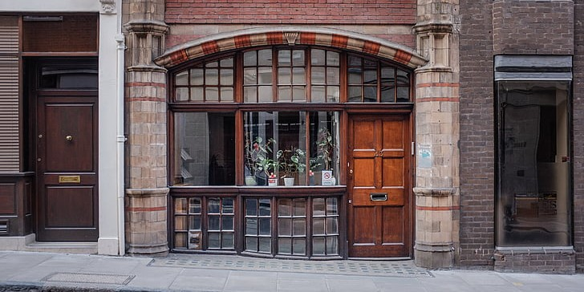
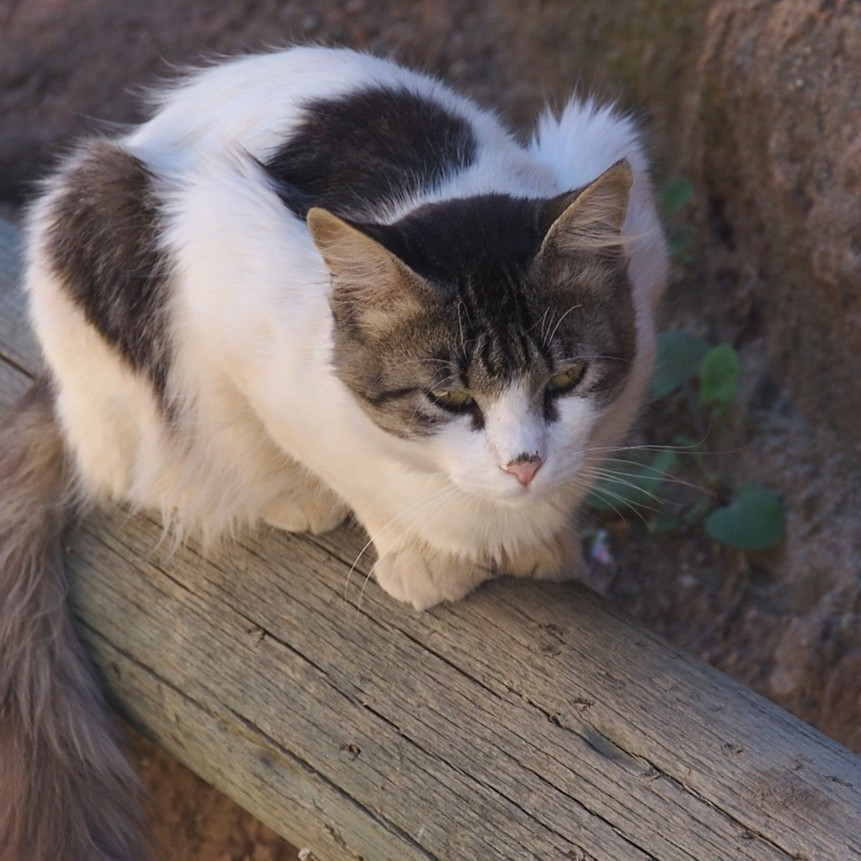

About Us
Our Mission
Providing a warm, welcoming space for rescue cats to rest while they wait for their forever homes. Rooted in Asian traditions of hospitality and connection, The Mao Lounge offers a place where both people and cats can feel at peace. Every cup served and every purr shared supports our goal of giving these beloved companions the love and care they deserve.
The Meaning Behind Mao

Our founder wanted to integrate both her Chinese heritage and her love for cats into one place, hence the birth of The Mao Lounge. "Mao" means cat in Mandarin, and in our coffee shop, we strive to uphold Asian hospitality principles while saving cats from euthanization.
The inspiration
Meet Moon, short for Mooncake (a traditional Chinese dessert eaten during the Lunar Festival). Our founder was in her 1st year of grad school when she found Moon. Our founder was struggling with balancing school work and a corporate job- not to mention her increasing lonliness in a city she was unfamiliar with. One day, she was walking through her typical route after class. Her shoelaces were untied, and she caught the attention of Moon who followed her to the bus stop. Moon seemed to take to our founder immediately, and it was clear that Moon had to go home with her. Had our founder not taken Moon back with her, Moon would have probably been caught and taken to the pound where she would have been put down. With this realization, our founder wanted to create a place where cats could safely stay until they found a home to go to.